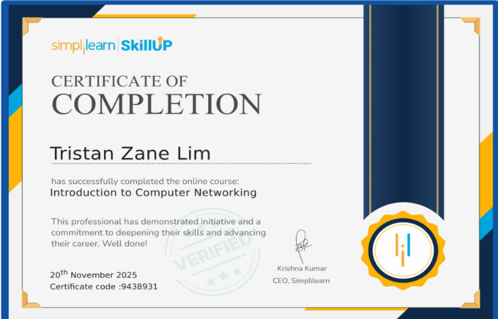

Coursera specializationGoogle Prompting
EssentialsTristan Zane Lim
EssentialsTristan Zane Lim
Verified credential
Google Prompting Essentials
Coursera · Professional certificate
A verified specialization covering practical prompting skills for writing, analysis, research, and everyday work.
View certificate ↗